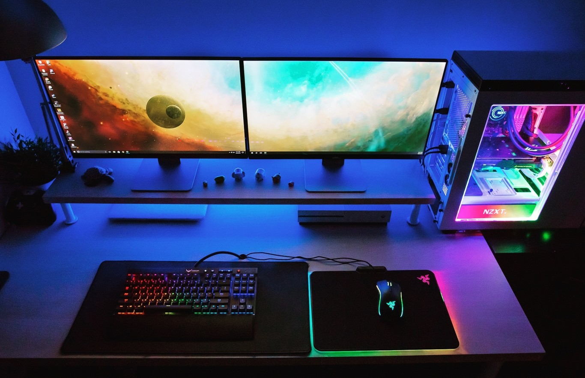

My name is Alexander Poplawski. I am a senior at Rowan University, originally from Berlin, CT. I am a computer science student that is also passionate about fitness and health!
Hobbies
Rock climbing
Weight lifting
Playing video games
Playing guitar
Watching sports

Skills
Proficient in C++, Java, and Python
Proficient in Microsoft Office Suite
Expert in Adobe Creative Cloud
5 years of customer oriented work
Fluent in Polish and English
Relevant Courses
Intro to Digital Systems
Intro to Electricity and Magnetism
Calculus I & II
Discrete Structures
Object Oriented Programming
Web Development
Data Structures and Algorithms
Applied Database Systems
Education
Details
Senior at Rowan University
Graduating 2025
Bachelor of Computer Science
Projects
Smarter Dining Hall Population Detector - Intro to Digital Systems
Created a prototype sensor that detects when a person enters and exits the dining hall and keeps track of the population on an online server.
Designed and printed a PCB for the sensor.
Programmed the ultrasonic sensor using Python.
FPGA Dinosaur Game - Intro to Digital Systems
Designed and programmed a state machine that mimics the Chrome Dinosaur Game on an Intel FPGA.
Used Quartus software to program the FPGA using Verilog HDL.
Simulated the state machine using ModelSim simulation software for debugging purposes.
Art Projects
In my free time, I also like to design flyers for local music shows happening in my area. I am proficient with the Adobe Creative Cloud Suite.
For any inquiries contact poplaw96@students.rowan.edu!